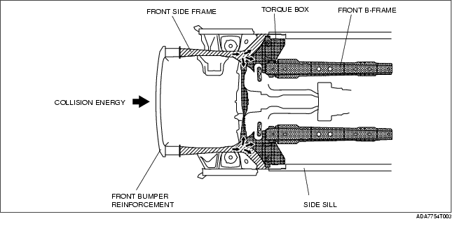

Crushable zone construction
• To reduce cabin damage, the front and rear of the frame are designed to deform when incurring an impact, and effectively absorb/disperse energy from a collision.
- - In moderate collisions at the front bumper reinforcement, impact is diffused to the front side frames and front suspension members.
-
- If the collision comes close to the cabin, impact is diffused to the side sills and front B frames through the torque box, reducing impact to the cabin.
